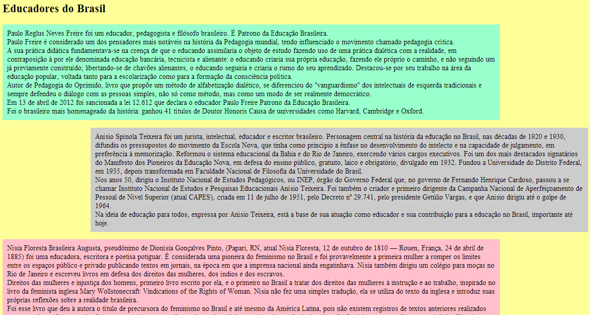

Até agora vimos como inserir diversos elementos (parágrafos, figuras, links, tabelas, etc) em uma página HTML sem indicar qualquer formatação. No entanto, ao abrir o arquivo css01.html, é fácil perceber que o navegador aplica uma formatação padrão aos elementos:
Nesta aula iremos iniciar o uso da CSS (Cascading Style Sheets – Folhas de Estilo em Cascata) para aplicar estilo (formatação) aos elementos presentes em uma página HTML. Com CSS é possível aplicar diversas formatações tais como cor de fundo, tamanho de fontes e posicionamento.
Vamos começar com os estilos inline, ou seja, estilos definidos nas próprias tags através do atributo style (arquivo css02.html):
<body style="background-color: green">
<h1 style="font-size: 32pt">DIATINF</h1>
<h2 style="color: #FF0000; font-family: cursive">
Cursos técnicos
</h2>
<ul style="list-style-type: square">
<li>Informática para Internet</li>
<li>Manutenção e Suporte em Informática</li>
<li>Administração</li>
</ul>
</body>
O atributo style especifica o estilo de um elemento. Cada propriedade CSS (font-size, color, etc) é seguida por um sinal de dois-pontos e um valor. É possível especificar mais de uma propriedade separando-as com o sinal de ponto-e-vírgula, assim como foi feito na tag h2. Seguem as descrições das propriedades utilizadas:
| Propriedade | Descrição |
|---|---|
| background-color | Cor de fundo do elemento. |
| font-size | Tamanho da fonte utilizada no elemento. |
| color | Cor do texto presente no elemento. |
| font-family | Fonte, ou família de fontes, do texto presente no elemento. |
| list-style-type | Tipo de marcador ou numeração dos itens em uma lista. |
Estilos inline são úteis para aplicar formatação individual, mas não são adequados para definir estilos que devem ser aplicados em todo o documento HTML. Para isso, podemos utilizar as folhas de estilos internas, que também chamadas de folhas de estilo incorporadas. O arquivo css03.html utiliza esta segunda forma de estilo para aplicar a mesma formatação do exemplo anterior:
<html>
<head>
<title>CSS</title>
<style type="text/css">
body{ background-color: green }
h1{ font-size: 32pt }
h2{
color: #FF0000;
font-family: cursive
}
ul{ list-style-type: square }
</style>
</head>
<body>
<h1>DIATINF</h1>
<h2>Cursos técnicos</h2>
<ul>
<li>Informática para Internet</li>
<li>Manutenção e Suporte em Informática</li>
<li>Administração</li>
</ul>
</body>
</html>
A tag style, que deve vir acompanhada do atributo type="text/css", é utilizada para definir folhas de estilos internas e deve ser declarada como conteúdo de head. O conteúdo de style define as regras de formatação a serem aplicadas ao documento HTML. Cada regra de formatação é composta por um seletor e uma ou mais propriedades CSS. O seletor determina quais elementos serão estilizados de acordo com a respectiva regra. Por exemplo, a regra CSS abaixo determina um tamanho de fonte com 32pt para o texto de todos os elementos h1 presentes no documento:
h1{ font-size: 32pt; }
Percebe-se então que folhas de estilo internas são mais indicadas quando precisamos definir regras de formatação generalizadas. Por exemplo, vamos definir que os itens de lista presentes na página devam utilizar texto formatado em itálico. Adicione, então, o seguinte código ao arquivo css03.html e observe o resultado:
li{ font-style: italic; }
Caso utilizássemos o estilo inline, teríamos que repetir a declaração do estilo para cada ocorrência de li presente no documento, o que seria uma tarefa pouco agradável se a lista possuísse muitos itens.
Até aqui vimos que estilos inline são apropriados para aplicação de formatação individual e que folhas de estilos internas são mais adequadas para formatação generalizada na mesma página. No entanto, é comum que queiramos aplicar os mesmos estilos de formatação às diversas páginas que constituem um site. Neste caso, devemos utilizar as folhas de estilo externas, que nada mais são do que arquivos que contém apenas código CSS. Assim como nas folhas de estilo internas, uma folha de estilo externa contém regras de formatação compostas por seletores e propriedades CSS. O arquivo estilo.css contém as mesmas regras de formatação presentes na folha de estilo incorporada da página css03.html.
A tag link é utilizada para relacionar uma página HTML com arquivos de folhas de estilo externas e deve ser acompanhada dos atributos rel="stylesheet" e type="text/css". O atributo href também deve estar presente e seu valor deve ser o nome, ou caminho relativo, do arquivo de folha de estilo externa. A página css04.html utiliza a tag link para referenciar uma folha de estilo externa:
<html>
<head>
<title>CSS</title>
<link rel="stylesheet" type="text/css" href="estilo.css" />
</head>
<body>
<h1>DIATINF</h1>
<h2>Cursos técnicos</h2>
<ul>
<li>Informática para Internet</li>
<li>Manutenção e Suporte em Informática</li>
<li>Administração</li>
</ul>
</body>
</html>
Ao centralizar as regras de formatação em arquivos separados, folhas de estilo externas proporcionam facilidade de manutenção do site. Caso algum estilo precise de modificações, basta alterar a folha de estilo externa, não sendo necessárias alterações nas páginas HTML. Folhas de estilo externas também evitam a repetição de código CSS nas diversas páginas HTML.
1) Aplique a seguinte formatação ao arquivo exercicio01.html:
2) Aplique estilos na página exercicio02.html para deixá-la semelhante à figura abaixo. Faça uma pesquisa sobre as propriedades margin-right, margin-left e padding. Utilize a ferramenta disponível em https://www.w3schools.com/colors/colors_picker.asp para descobrir os códigos de cores.
3) Explore a documentação disponível no endereço https://www.w3schools.com/cssref/default.asp para conhecer as propriedades CSS e use sua criatividade para formatar uma cópia do arquivo exercicio01.html.